Euphony Voyage 6
A comprehensive 3D/VFX campaign developed for a premier event management company, showcasing the visual identity for a landmark concert featuring India's leading artists, Sidhe Mauth and Shreya Ghoshal. This project focuses on atmospheric world-building, high-fidelity character rendering, and dynamic motion graphics to capture the essence of their unique musical styles.
Procedural Forest Orchestration
Utilizing Geometry Nodes for large-scale environment orchestration. To manage the immense geometrical density of the forest, we implemented a robust instancing system where trees are scattered across a procedurally generated landscape—itself displaced via noise-based functions within the node tree. A collection of high-fidelity forest assets is sampled using randomized seeds to ensure natural variety, allowing for the rendering of vast, complex ecosystems that would otherwise exceed hardware memory constraints.
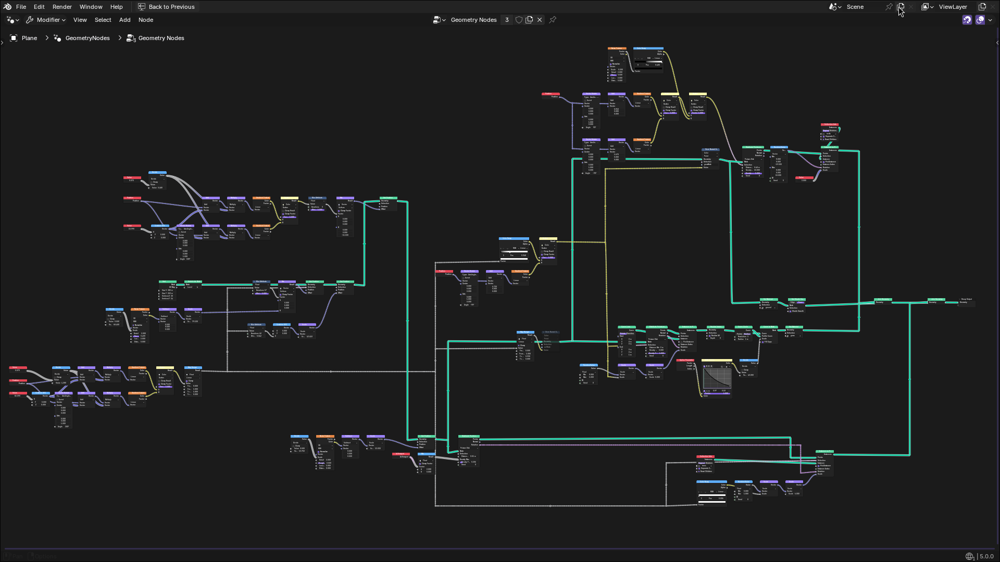
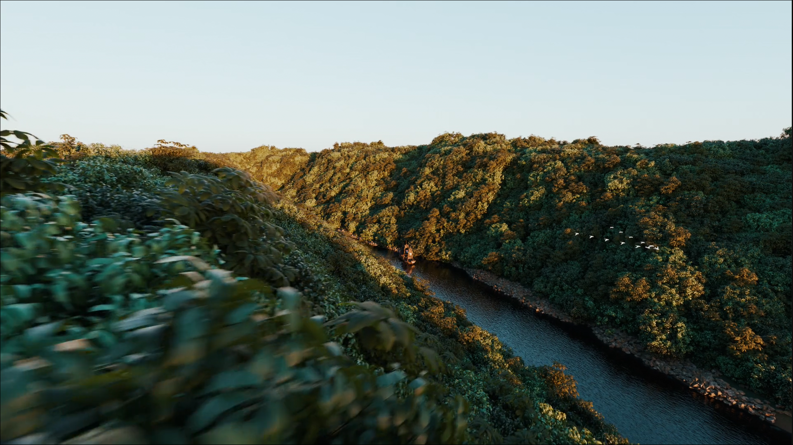
Procedural Crowd Simulation
Advanced population management utilizing point-cloud distribution and randomized instance sampling. The system leverages procedural logic to manage high-density character populations, transitioning from low-poly proxies during simulation to full-detail PBR character assets at render time. Each instance is assigned unique behavioral parameters and visual variations to maintain visual complexity across the stadium-scale environment while maintaining optimized viewport performance.
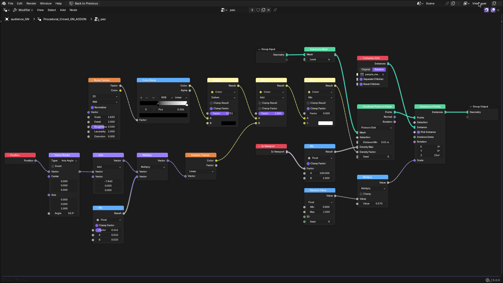
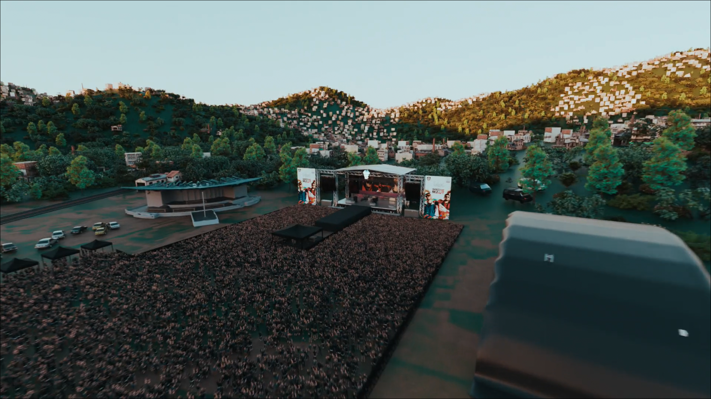
Dynamic Environment Culling Logic
Technical viewport and render optimization through camera-aware instance management. To facilitate the rendering of ultra-large-scale environments, we developed a system where instances are dynamically created and destroyed every frame based on the camera's field of view (frustum). A random distribution map is generated and then subtracted based on the camera's orientation; instances are only instantiated in the active viewing area, significantly reducing draw calls and memory overhead during the final render sequence.
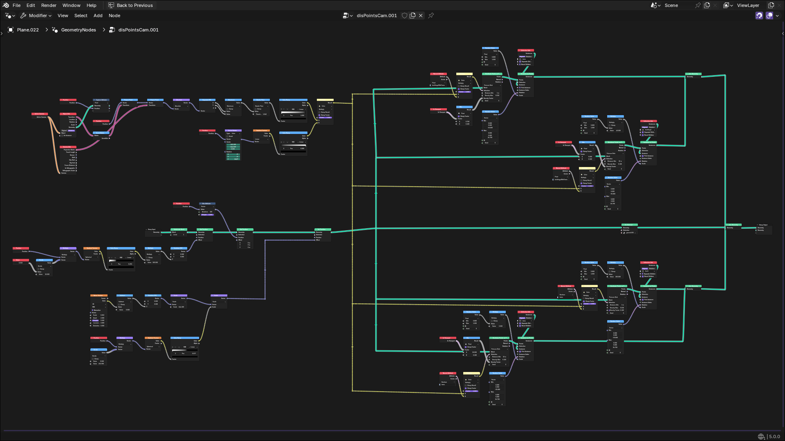
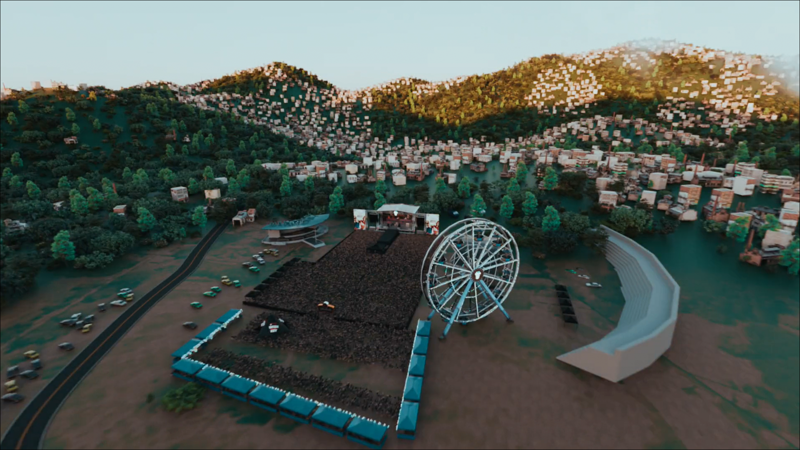
Hybrid AI-Asset Pipeline
Integration of ComfyUI for accelerated look-development and rapid asset iteration. This advanced workflow leverages custom node-based AI graphs to generate procedural HDRIs, high-resolution PBR texture maps, and initial mesh base-forms. By bridging AI-driven generation with traditional 3D DCCs, we significantly compressed the pre-production timeline while maintaining strict art direction and technical fidelity for the final VFX assets.
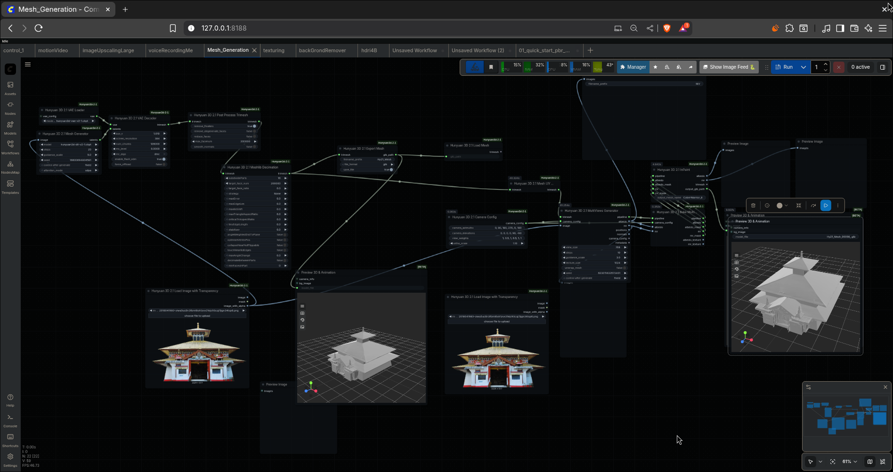
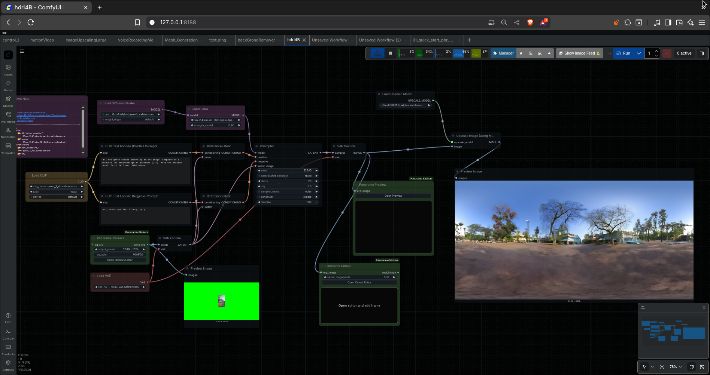
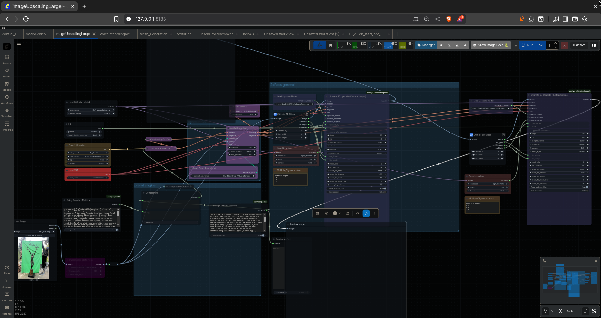
Hero Asset: Biological Sculpting
Anatomical breakdown of the primary creature asset. This high-fidelity model utilized multi-channel UDIM workflows to support extreme 8K cinematic close-ups. The PBR material stack incorporates custom subsurface scattering (SSS) maps and micro-displacement layers, meticulously supervised to ensure the creature maintains visual integrity across diverse lighting environments.
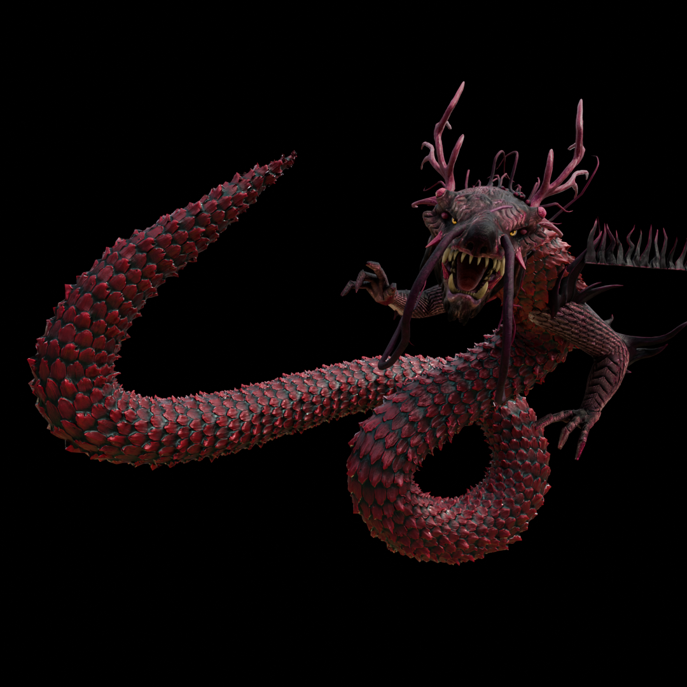
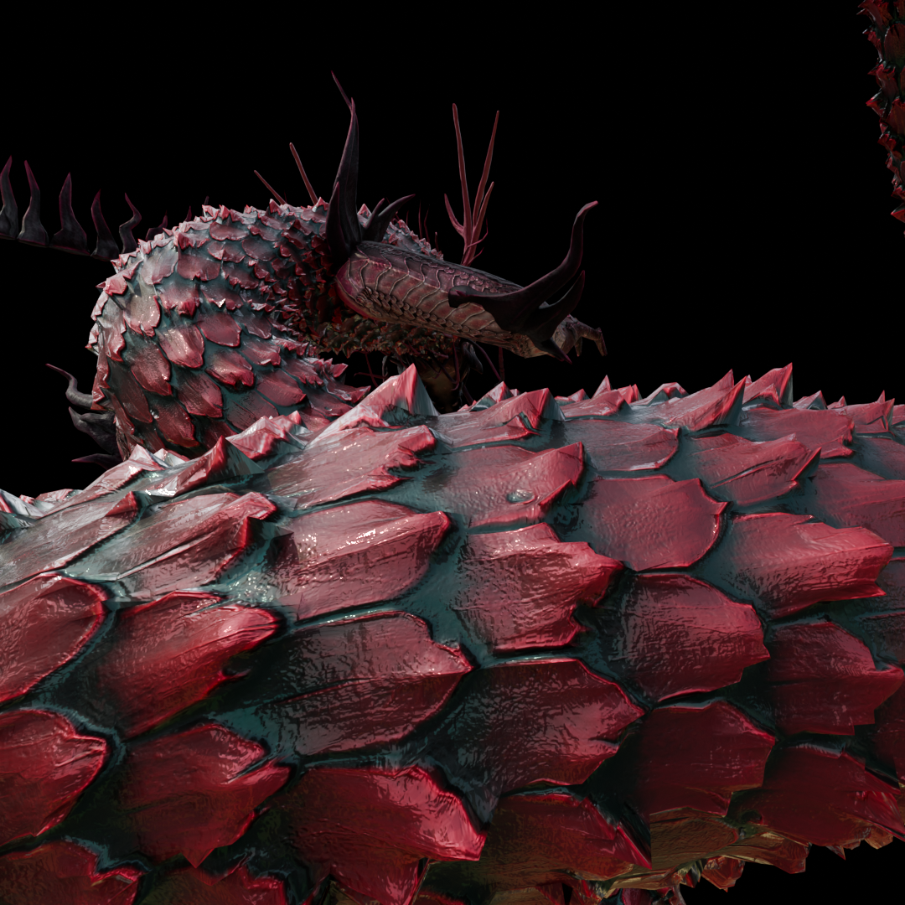
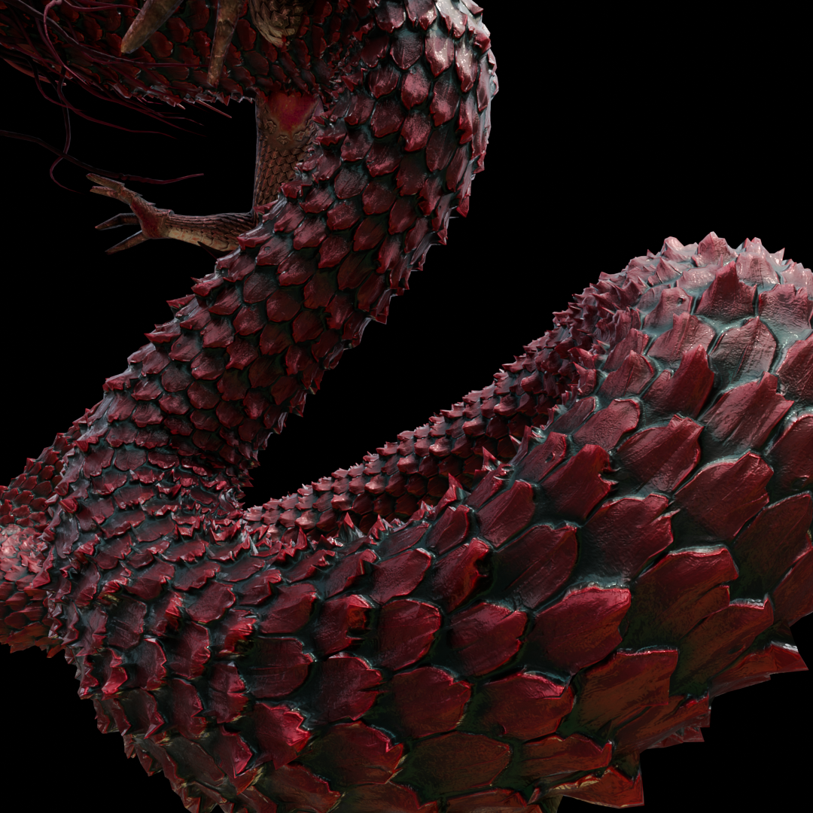
Compositing: Lighting Validation Passes
Linear workflow validation via Ambient Occlusion (AO) passes. These renders serve as the foundational 'grounding' layer during the compositing phase, isolating contact shadows and micro-shadowing. This rigorous technical pass is essential for ensuring the seamless integration of CG assets into the procedural environments, maintaining spatial consistency and depth throughout the cinematic sequence.
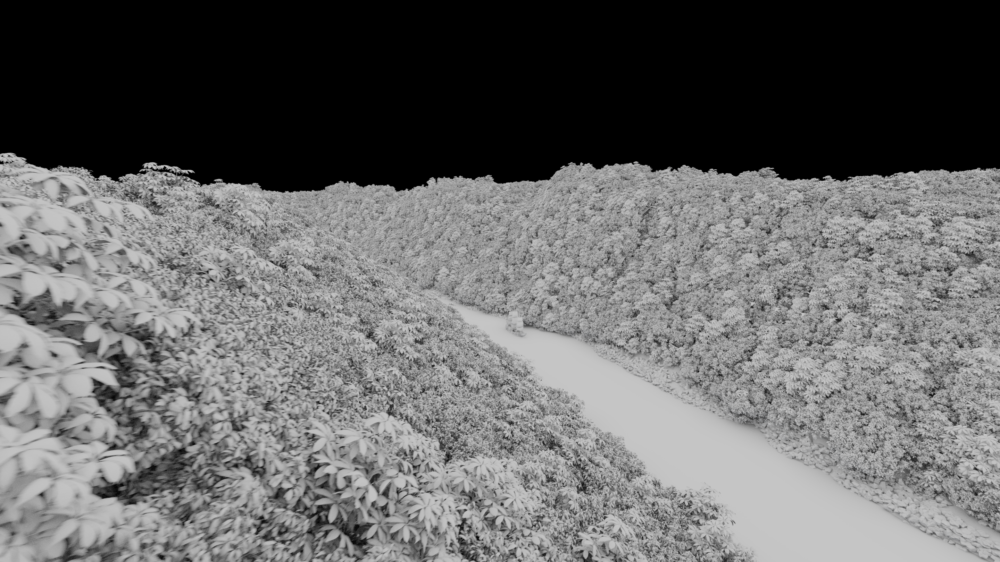
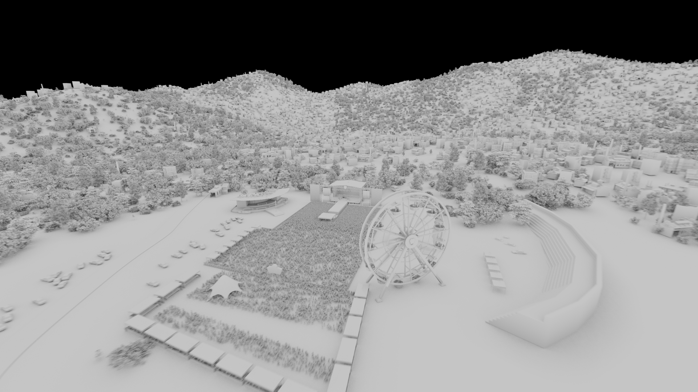
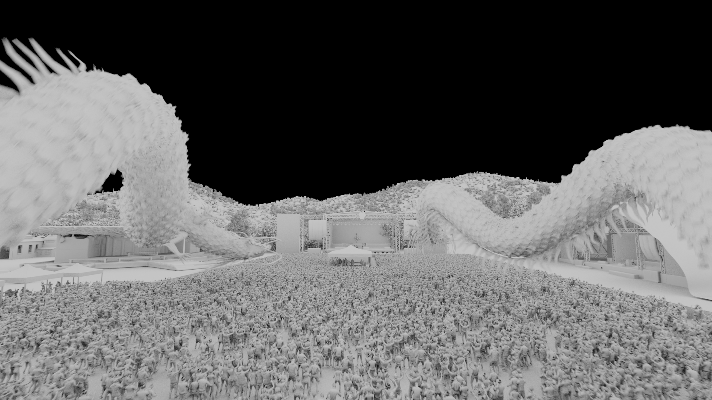
Synergetic Motion Design & Rhythmic Sync
Promotional assets developed through a tightly integrated Blender and After Effects pipeline, focusing on tempo-mapped visual effects and dynamic typographic animation. Each mashup is meticulously synchronized to the artists' performance tracks, utilizing procedural animation nodes and custom shaders to visualize the energy of the Euphony Voyage 6 concert tour.